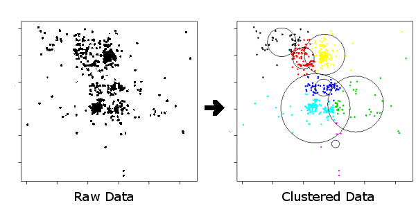

A developer I am working with is developing a program that analyzes images of
pavement to find cracks in the pavement. For every crack his program finds, it
produces an entry in a file that tells me which pixels make up that particular
crack. There are two problems with his software though:
1) It produces several false positives
2) If he finds a crack, he only finds small sections of it and denotes those
sections as being separate cracks.
My job is to write software that will read this data, analyze it, and tell the
difference between false-positives and actual cracks. I also need to determine
how to group together all the small sections of a crack as one.
I have tried various ways of filtering the data to eliminate false-positives,
and have been using neural networks to a limited degree of success to group
cracks together. I understand there will be error, but as of now, there is
just too much error. Does anyone have any insight for a non-AI expert as to
the best way to accomplish my task or learn more about it? What kinds of books
should I read, or what kind of classes should I take?
EDIT My question is more about how to notice patterns in my coworker's
data and identify those patterns as actual cracks. It's the higher-level logic
that I'm concerned with, not so much the low-level logic.
EDIT In all actuality, it would take AT LEAST 20 sample images to give an
accurate representation of the data I'm working with. It varies a lot. But I
do have a sample here, here, and here. These images have already been
processed by my coworker's process. The red, blue, and green data is what I
have to classify (red stands for dark crack, blue stands for light crack, and
green stands for a wide/sealed crack).
Answer
In addition to the useful comments about image processing, it also sounds like
you're dealing with a clustering problem.
Clustering algorithms come from the machine learning literature, specifically
unsupervised learning. As the name implies, the basic idea is to try to
identify natural clusters of data points within some large set of data.
For example, the picture below shows how a clustering algorithm might group a
bunch of points into 7 clusters (indicated by circles and color):

(source: natekohl.net)
In your case, a clustering algorithm would attempt to repeatedly merge small
cracks to form larger cracks, until some stopping criteria is met. The end
result would be a smaller set of joined cracks. Of course, cracks are a little
different than two-dimensional points -- part of the trick in getting a
clustering algorithm to work here will be defining a useful distance metric
between two cracks.
Popular clustering algorithms include k-means clustering (demo) and
hierarchical clustering. That second link also has a nice step-by-step
explanation of how k-means works.
EDIT : This paper by some engineers at Phillips looks relevant to what
you're trying to do:
- Chenn-Jung Huang, Chua-Chin Wang, Chi-Feng Wu, " Image Processing Techniques for Wafer Defect Cluster Identification ," IEEE Design and Test of Computers, vol. 19, no. 2, pp. 44-48, March/April, 2002.
They're doing a visual inspection for defects on silicon wafers, and use a
median filter to remove noise before using a nearest-neighbor clustering
algorithm to detect the defects.
Here are some related papers/books that they cite that might be useful:
- M. Taubenlatt and J. Batchelder, “ Patterned Wafer Inspection Using Spatial Filtering for Cluster Environment ,” Applied Optics, vol. 31, no. 17, June 1992, pp. 3354-3362.
- F.-L. Chen and S.-F. Liu, “ A Neural-Network Approach to Recognize Defect Spatial Pattern in Semiconductor Fabrication. ” IEEE Trans. Semiconductor Manufacturing, vol. 13, no. 3, Aug. 2000, pp. 366-373.
- G. Earl, R. Johnsonbaugh, and S. Jost, Pattern Recognition and Image Analysis , Prentice Hall, Upper Saddle River, N.J., 1996.
Suggest
Your problem falls in the very broad field of image classification. These
types of problems can be notoriously difficult, and at the end of the day,
solving them is an art. You must exploit every piece of knowledge you have
about the problem domain to make it tractable.
One fundamental issue is normalization. You want to have similarly classified
objects to be as similar as possible in their data representation. For
example, if you have an image of the cracks, do all images have the same
orientation? If not, then rotating the image may help in your classification.
Similarly, scaling and translation (refer to this)
You also want to remove as much irrelevant data as possible from your training
sets. Rather than directly working on the image, perhaps you could use edge
extraction (for example Canny edge detection). This will remove all the
'noise' from the image, leaving only the edges. The exercise is then reduced
to identifying which edges are the cracks and which are the natural pavement.
If you want to fast track to a solution then I suggest you first try the your
luck with a Convolutional Neural Net, which can perform pretty good image
classification with a minimum of preprocessing and noramlization. Its pretty
well known in handwriting recognition, and might be just right for what you're
doing.